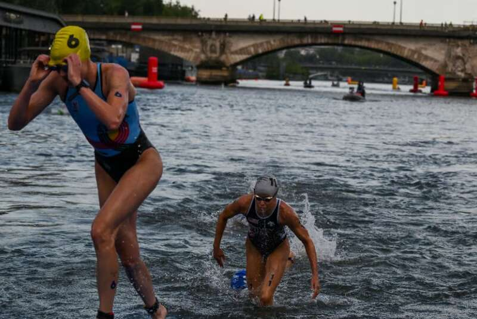
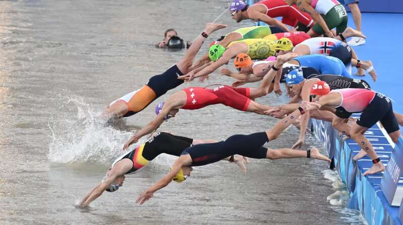
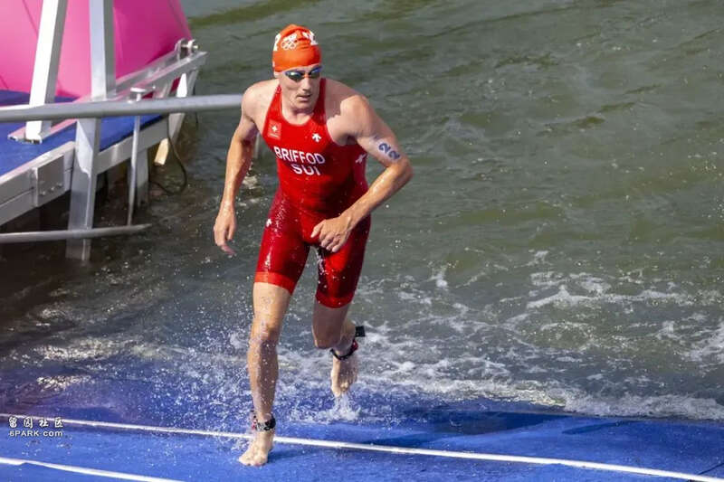

综合《巴黎人报》、《解放报》报道，比利时女子铁人三项运动员米歇尔（Claire Michel）因身体原因，退出当地时间8月5日举行的铁人三项混合接力赛。有比利时媒体在报道中提到大肠杆菌感染，也有媒体认为，可能与上周参加铁人三项个人赛期间在塞纳河游泳有关。
01比利时铁人三项运动员赛后生病
8月4日晚，比利时奥委会称，35岁比利时铁人三项运动员米歇尔（Claire Michel）参加铁人三项女子个人赛四天后，因“生病”退出8月5日举行的铁人三项混合接力赛。根据比利时媒体报道，米歇尔有肠道疾病。
巴黎奥组委当晚表示，希望她早日康复，“将与她保持联系”，但未有谈及米歇尔的病情。

▲7月31日，法国运动员博格朗（Cassandre Beaugrand）在女子铁人三项比赛中赢得冠军。马克龙为她庆贺的同时，为在塞纳河上成功举办了游泳比赛激动不已。（法新社图）
世界铁人三项联盟（World Triathlon）表示，部分媒体和不少网友立即与塞纳河水质建立联系，但铁人三项女子个人赛当天塞纳河水水质达到安全阈值。运动员生病与塞纳河水质的关系仅仅限于猜想，目前没有证据证实两者间的直接联系。
负责体育、奥运会和残奥会以及塞纳河事务的巴黎副市长拉巴丹（Pierre Rabadan）也表示，没有证据证明运动员生病与塞纳河水质之间的关联。
大巴黎地区行政长官纪尧姆（Marc Guillaume）也保证说，在铁人三项比赛开始前采取了措施，每天早上5点半都进行测试，比赛当天的水质标准达到2024年最好水平。
但据《解放报》了解到，塞纳河水质检测，通常需要15个小时，也就是说，7月31日比赛当天的水质报告是前一天的样本检测结果。
02辟谣！生病运动员未住院
有比利时媒体称，米歇尔在塞纳河游泳后已住院四天，但比利时奥委会坚决否认这一说法。

▲在8月5日巴黎铁人三项混合接力赛决赛中，德国队勇夺金牌，美国拿下银牌，英国收获铜牌。（法新社图）
为巴黎奥运会运动员提供专科医疗服务的毕沙医院（hôpital Bichat）的两名消息人士8月4日透露，“没有听说过”这名铁人三项运动员。米歇尔身边的工作人员则表示，她一直在奥运村房间内。比利时奥委会补充说，她于8月5日前往奥运村综合诊室，随后她回到房间。
巴黎奥运会和残奥会组织委员会（Cojop）表示，有必要纠正部分媒体传播的错误消息。截至目前，米歇尔从未住院。
03大肠杆菌污染渠道可能很多
据了解，米歇尔的病症与大肠杆菌感染症状相吻合，但污染物来源可能很多。那么，如何确认米歇尔是否因在塞纳河中游泳感染大肠杆菌呢？
一名不愿透露姓名的微生物学家表示，最重要的是确定发病时间，感染48至72小时后，病患开始出现症状。
因此，若正如比利时媒体所报道的，米歇尔已经病了四天，那么她生病与塞纳河游泳无关。至于大肠杆菌来源，这名专家认为，可能来自受污染的食物，也可能有其他情况。
04技术手段可确认大肠杆菌来源
若希望更进一步地确认细菌来源，日内瓦大学传染病专家弗拉豪尔特（Antoine Flahault）表示，可以使用技术手段对大肠杆菌进行溯源，即对铁人三项运动员体内的细菌菌株进行分析：通过细菌血清分型和基因分型确认大肠杆菌菌株，再与世界各国报告的细菌菌株和塞纳河水中的细菌菌株进行比较。
但微生物学家认为，这种方式似乎有些困难，因为塞纳河水中有细菌菌株种类繁多，并且不同来源的废水都排入塞纳河。
05瑞士铁人三项运动员赛后生病

▲瑞士男子铁人三项运动员布里福德（Adrien Briffod）退赛。（法新社图）
此外，瑞士男子铁人三项运动员布里福德（Adrien Briffod）也因“胃肠感染”，被迫放弃比赛。瑞士铁人三项联合会主席萨拉明（Pascal Salamin）表示，已排除塞纳河细菌感染的可能性。
另一位比利时女子铁人三项运动员韦尔梅伦（Jolien Vermeylen）则表示，比赛中“我喝了很多水”，不知道赛后会不会生病，“并且我在游泳时感受到了一些细思极恐的东西”。韦尔梅伦还补充说，“我们原以为比赛当天塞纳河水质可以奇迹般地变好”。